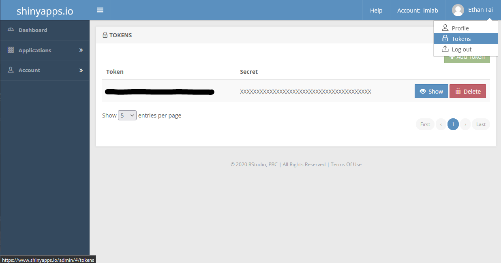
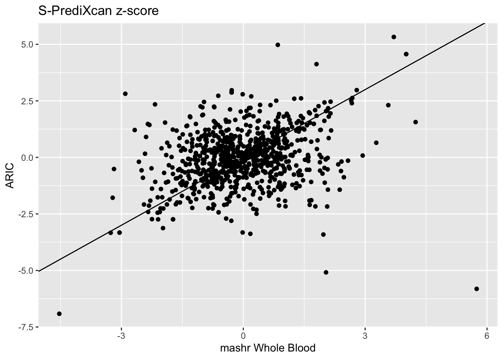
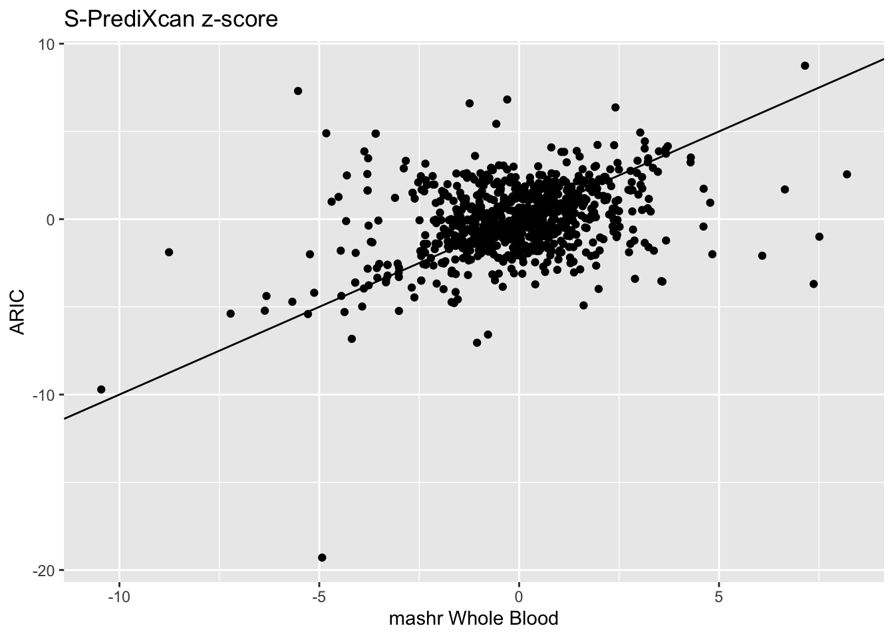
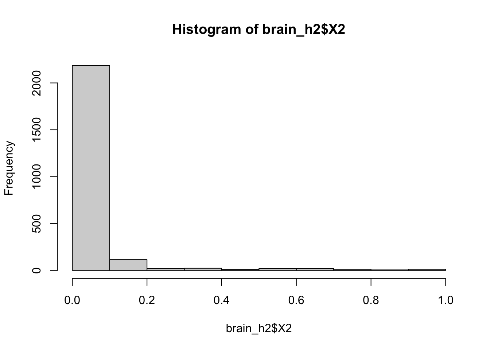

Now generated with quarto. Add or edit posts on github here

rsconnect
\gpfs/data/im-lab/nas40t2/Data/BBJ


install.packages('blogdown')
blogdown::install_hugo()
INFO - 0 % of model's snps used
/gpfs/data/im-lab/nas40t2/Data/References/mappings/UKB2GTEx_mapping.txt.gz

Some going-to-nowhere exploration on regressing out PCA